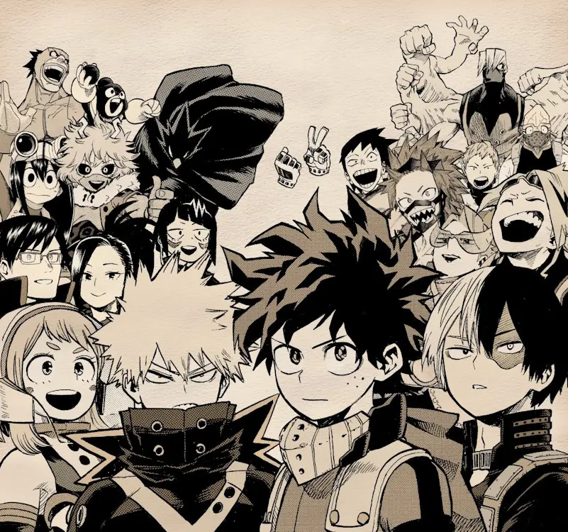
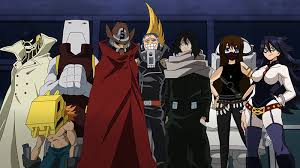

My Hero Academia Trilogy
Overview:
Origins
Follow Izuku "Deku" Midoriya, a Quirkless teenager determined to become a hero. With guidance from All Might, the world's greatest hero, Deku embarks on his journey, learning to wield the legendary power of One for All while facing the emerging threat of the League of Villains.
My Hero Academia: Rising Heroes
The stakes rise as the young heroes face their toughest challenges yet. Training camps, Provisional Hero Licenses, and encounters with the sinister Overhaul test their limits. Deku grows as a leader, proving himself worthy of the One for All legacy.
My Hero Academia: Final Clash

In an all-out battle for the future of hero society, U.A. students unite with professional heroes against powerful villains. Deku and his friends confront Shigaraki and the League in a climactic showdown that will determine the fate of humanity. Embark on this action-packed saga where courage, friendship, and sacrifice shape a new generation of heroes!